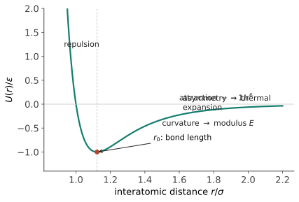

结构 I · 键合与材料四大家族
材料的"家族性格"在原子拉手的那一刻就定了：金属键给了金属延展与导电，共价/离子键给了陶瓷高硬与脆性，范德华力与共价链的混搭给了高分子又软又韧。本页把键型 → 家族性格的对应讲透——这是全课一切"为什么"的第一层地基。
1. 四种键，先看一张总表
| 键型 | 机制 | 键能量级 | 方向性 | 典型材料 |
|---|---|---|---|---|
| 离子键 | 电子转移，静电吸引 | 600–1500 kJ/mol | 无方向 | NaCl、MgO、多数陶瓷 |
| 共价键 | 电子共享 | 200–1000 kJ/mol | 强方向性 | 金刚石、Si、SiC |
| 金属键 | 离子实浸在电子气中 | 100–800 kJ/mol | 无方向 | 金属全家 |
| 范德华/氢键 | 瞬时/永久偶极 | 1–50 kJ/mol | 弱 | 分子晶体、高分子链间、冰 |
读法：键能定熔点与模量的量级（钨 3422 °C vs 聚乙烯约 130 °C 软化——两个数量级的键能差直接写在温度计上）；方向性定变形方式——这是下一节的主戏。
2. 键的物理：一口势阱
两原子间势能 \(U(r)\) = 长程吸引 + 短程排斥（Lennard-Jones 形式 \(U = 4\varepsilon[(\sigma/r)^{12} - (\sigma/r)^6]\) 是通用漫画）。三个性能直接从这口阱里读出：
- 平衡键长 \(r_0\)：阱底位置——晶格常数的来源；
- 弹性模量 ∝ 阱底曲率 \(U''(r_0)\)：模量是"键的弹簧刚度"的宏观和（性能 I 展开）——模量是本征性能，几乎不能靠热处理改变（阱形状是键决定的），这是选材时的第一条铁律；
- 热膨胀 ∝ 阱的不对称：温度升高原子在阱里振幅加大，阱右缓左陡 ⇒ 平均位置右移——受热膨胀的微观真相（功能 III 再会）；键越强阱越深越对称 ⇒ 陶瓷热膨胀小于金属小于聚合物。

3. 键型 → 家族性格（本页核心逻辑链）
金属：电子气无方向性 ⇒ 原子层可以滑移而键不断（滑过去照样泡在电子海里）⇒ 延展性；自由电子 ⇒ 导电导热、金属光泽。"能弯"与"导电"是同一句话的两个后果。
陶瓷（离子/共价）：离子键滑移半格就同号相斥、共价键方向性锁死角度 ⇒ 位错难动 ⇒ 硬而脆（碎给你看也不弯给你看——性能 IV 的全部剧情在此埋种）；电子被锁定 ⇒ 绝缘/半导体。
高分子：链内共价（强）+ 链间范德华（弱）的双重键合 ⇒ 受力时链间滑动、链本身不断 ⇒ 又软又韧；加热先松开弱键 ⇒ 热塑性可反复成形。"强弱键混搭"是理解高分子一切脾气的钥匙（性能 III）。
复合材料：不新增键型，用界面把两家性格拼起来（碳纤维的强 + 树脂的韧）——设计发生在"家族之间"。
半导体的位置：共价为主、带隙适中的边缘户（Si、GaAs）——功能 I 专章。
4. 数字感（材料人的常识刻度）
| 量 | 量级 | 备注 |
|---|---|---|
| 原子间距 | ~0.1–0.3 nm | 一切微观图景的标尺 |
| 杨氏模量 | 聚合物 0.1–5 GPa ｜ 铝 70 ｜ 钢 210 ｜ 金刚石 ~1100 | 三个家族差三个数量级 |
| 熔点 | 聚乙烯 ~130 °C ｜ 铝 660 ｜ 铁 1538 ｜ 钨 3422 ｜ SiC 升华 ~2700 | 键能的温度计 |
| 密度 | 聚合物 ~1 ｜ 铝 2.7 ｜ 钛 4.5 ｜ 钢 7.8 ｜ 钨 19.3 g/cm³ | 收官页 Ashby 图的纵轴 |
5. 反直觉清单
- 强键 ≠ 好材料：金刚石键最强却一敲就裂——强度与韧性是两回事（性能 II 的主题）；
- 模量改不了、强度改得了：热处理能把同一根钢的强度调三倍，模量纹丝不动——前者是缺陷的事（结构 III），后者是键的事（本页）；
- 金属的延展性不是"软"，是键的宽容——最硬的钢也比最韧的陶瓷能弯。
下一页：原子拉好了手，接下来问它们怎么排队——晶体学：材料世界的几何语言。